Illustration
イラスト
イラスト、キャラクター、ロゴ、背景、
世界観を構成するグラフィックなど、
これまでに制作した作品を掲載しています。
一枚の絵として仕上げるだけでなく、
ゲームやWebサイト、創作の世界観など、
「どこで、どのように使うか」を考えながら制作しています。
イラスト
BUG
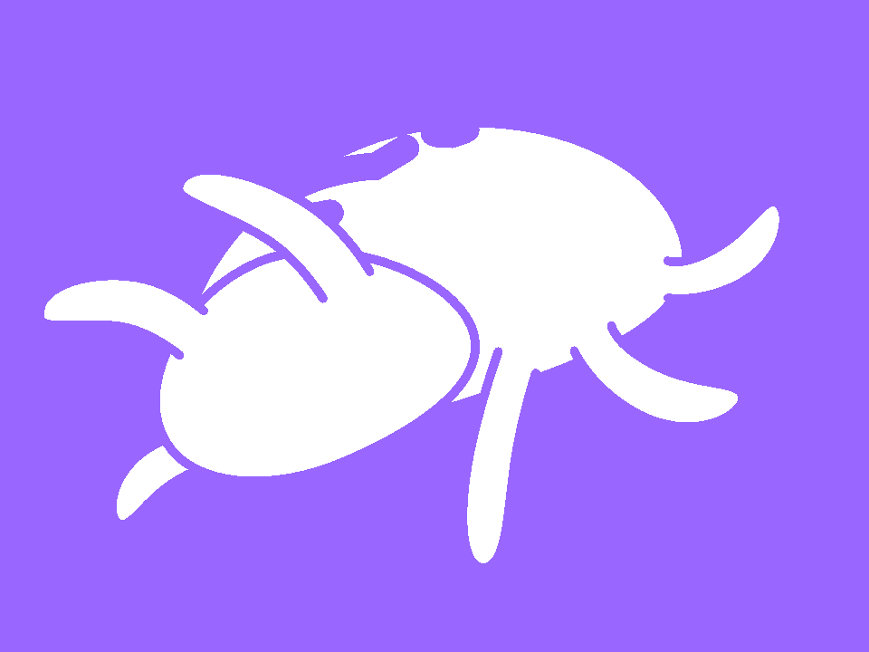
Scratchのデバッグ画面に登場する「バグ」をモチーフにしたイラストです。
元になったモチーフは平面的なデザインですが、
その形をそのまま描くのではなく、
「もしこのバグを立体的に描いたらどう見えるか」
という考えから制作しました。
身体のパーツ同士の重なりや輪郭の位置を調整し、
一つひとつの形が別々に見えるだけでなく、
全体として立体的に感じられるようにしています。
身近なScratchのモチーフを題材に、
ベクターエディターだけでどこまで表現を変えられるかを
試した作品です。
依頼制作作品
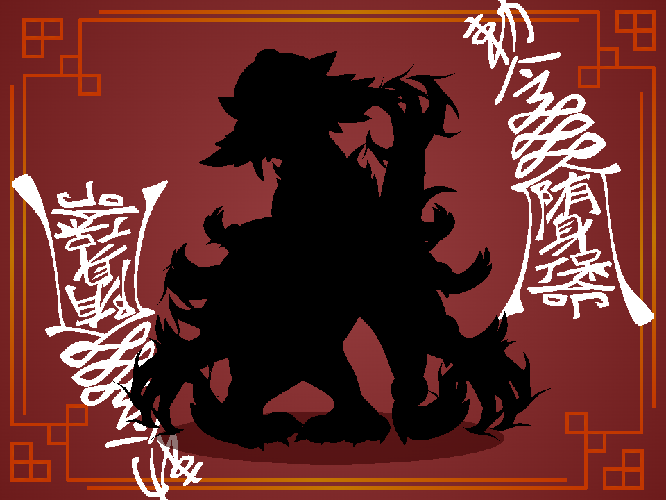
依頼を受けて制作したタイトルイラストです。
「かっこいい作品にしたい」という方向性をもとに、
キャラクターのシルエットを大きく見せ、
画面を見たときに人物へ視線が向かう構成にしました。
暗い背景に黒いキャラクターを置き、
白い文字装飾やオレンジ色のフレームを組み合わせることで、
色数を抑えながらも強い印象が残る画面を作っています。
キャラクターだけを描いて終わりにするのではなく、
タイトルや背景の装飾まで一枚の画面としてまとめることで、
作品そのものの雰囲気が伝わるタイトルイラストを目指しました。
2026年度 学校文化祭「けやき祭」制作作品
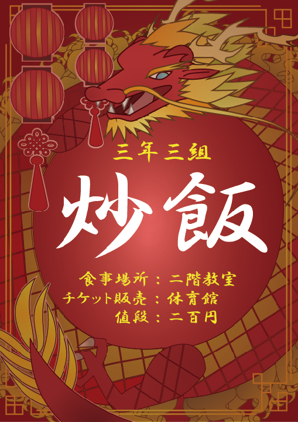
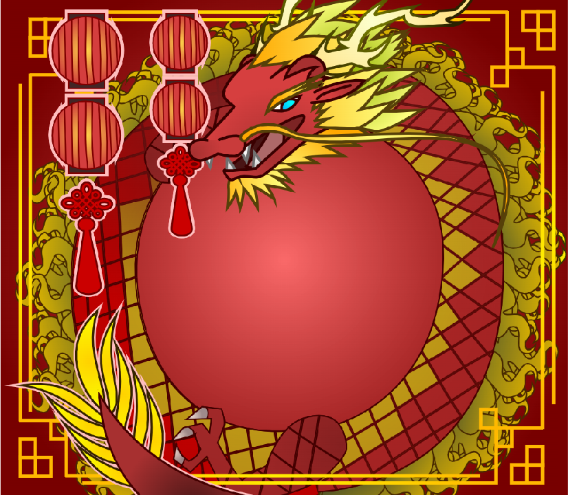
学校文化祭で使用する炒飯の看板・チラシ用のタイトルイラストとして制作しました。
中華料理を扱う企画であることから中華風の雰囲気を取り入れ、
文化祭の装飾に使用されていた龍を題材としてデザインしています。
提灯や金色の模様に囲まれた龍のイラストも、このチラシのために描いたものです。
制作当時に用意されていた炒飯の看板を参考にし、
そのデザインや雰囲気に合わせながら、
チラシとしてまとまるよう構成しました。
キャラクターだけでなく、背景や装飾などの素材もすべて自分で制作し、
全体の雰囲気が統一されるように仕上げています。
当初はAIを使用して制作する予定でしたが、
デザイン科で制作する作品として、
自分自身でデザインを考えて形にすることにしました。
授業内の3時間以内という限られた時間の中で、
ベクターエディターのみを使用して制作・完成させました。
夢
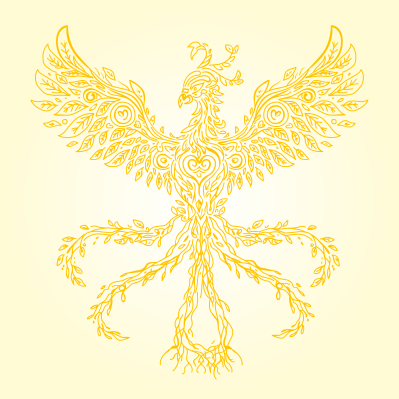
依頼を受けて制作したキャラクターイラストです。
依頼内容をもとにキャラクターを一つの作品として形にし、
シルエットや各パーツのまとまりを意識して制作しました。
キャラクター単体で見たときにも成立するよう、
全体の形を確認しながら細かな部分を調整しています。
Scratchのベクターエディターを使い、
曲線や図形を組み合わせて一つずつ形を作り、
キャラクターとして仕上げました。
ロゴデザイン
エクリプスラボ ロゴ
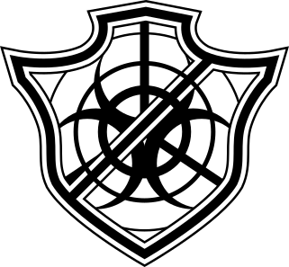
架空の研究機関「エクリプスラボ」のために制作したロゴです。
研究施設という設定に合わせ、
直線や幾何学的な形を中心に構成し、
無機質で整理された印象を持たせています。
中央にはバイオハザードマークを配置し、
その周囲を複数のラインで囲むことで、
危険な存在を扱う研究施設であることを
シンボルの中に組み込みました。
ロゴ単体でも組織の雰囲気が伝わるよう、
中央のマークと周囲の形状のバランスを調整しています。
創作の中ではWebサイトや資料などにも使用しており、
世界観を視覚的に統一するためのシンボルとして制作した作品です。
SANO
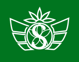
学校のロゴとして制作したデザインです。
学校を表すロゴとして、
複雑な絵ではなく一つのマークとして認識できる形を意識しました。
緑を基調とし、
中央のシンボルと「S」の文字を組み合わせています。
図形と文字を別々に置くのではなく、
一つのロゴとしてまとまって見えるように
大きさや配置を調整しました。
PHS
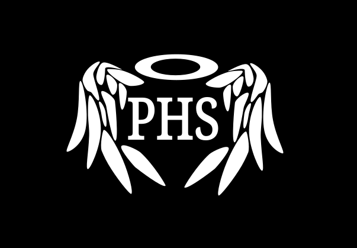
創作に登場する組織「PHS」のために制作したロゴです。
「PHS」という文字と抽象的なシンボルを組み合わせ、
組織名とマークの両方から認識できる形にしました。
黒と白を中心としたシンプルな配色にすることで、
色に頼らずシンボルそのものの形が印象に残るようにしています。
創作内で繰り返し使用することを考え、
イラストとは別に、
ロゴだけでも組織を表現できるデザインを目指しました。
デイテッド
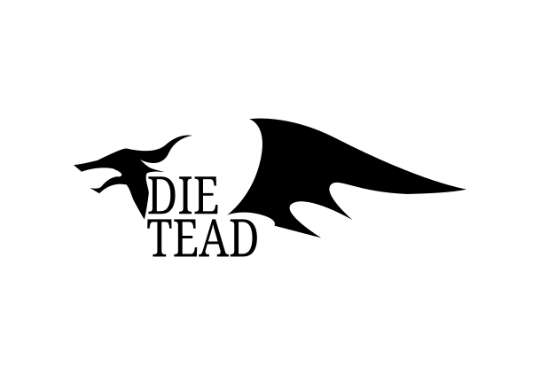
創作に登場する組織「デイテッド」のために制作したロゴです。
組織名だけでなく、
独自のシンボルを組み合わせることで、
名前を読まなくても視覚的に印象へ残ることを意識しました。
白地に黒いシンボルと文字を配置し、
シンボルの特徴的な形が目立つように
余白と文字の位置を調整しています。
創作内で使用する組織の「顔」として、
ロゴ単体でも成立することを意識して制作しました。
魔天楼 ロゴ
.svg)
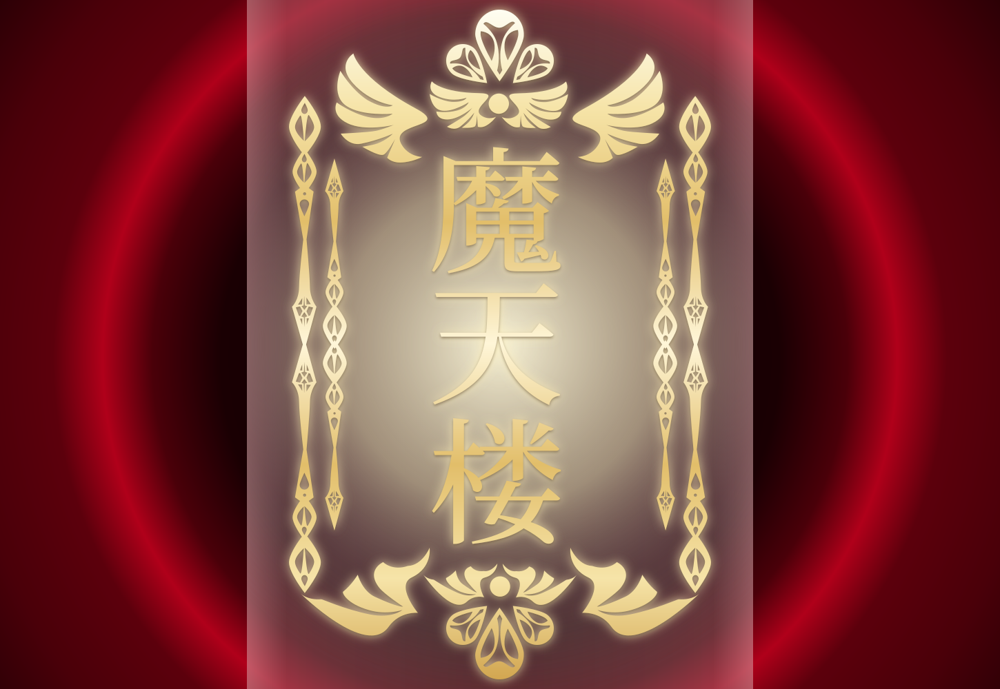
創作作品『魔天楼』のために制作したロゴと、設定資料集のサムネイルです。
左右対称の装飾で「魔天楼」の三文字を囲み、
羽や植物を思わせる飾りを上下に配置して、
塔のような縦長の印象を作りました。
ロゴは白一色のシンプルな形で制作し、
サムネイルでは赤と金を使って、
暗い背景の中で文字が浮かび上がるように仕上げています。
魔天楼 紋章
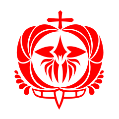
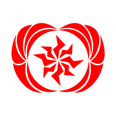
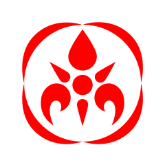
創作作品『魔天楼』に登場する、天使と悪魔の紋章セットです。
天使の紋章は、十字と光輪を共通の形にして、
階級が上がるほど翼が増えていくデザインにしました。
最後の一つは、円形の装飾で囲んだ別格の紋章としています。
悪魔の紋章は、七つの大罪それぞれに別のシンボルを用意し、
そこへ階級ごとの枠を重ねて使える形にしました。
枠は階級が上がるほど装飾が増え、
シンボルと枠を組み合わせると、赤い紋章になります。
黒一色を基本にして、形だけで区別できることを意識しています。
エイコウ ロゴ
創作作品『エイコウ』のタイトルロゴです。
角ばった文字の周囲に龍の身体を巻きつけ、
文字そのものがひび割れた結晶のように見える質感を加えました。
白と黒を中心にして、龍の世界観と合わせた
重厚で神秘的な印象を目指しています。
四つの紋章
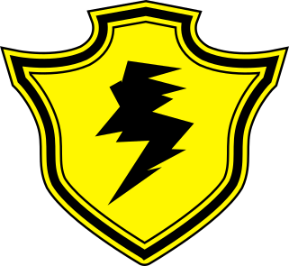
盾の形をそろえて制作した、四色のエンブレムです。
芽、稲妻、爪痕、龍の頭と、それぞれ違うモチーフを中央に置き、
緑・黄・赤・白黒と色でも見分けられるようにしました。
外枠の形を共通にすることで一組のシリーズとしてまとまり、
色とシンボルだけで一つひとつの違いが伝わることを意識しています。
オリジナルキャラクター
カネル・ヴァンパイア
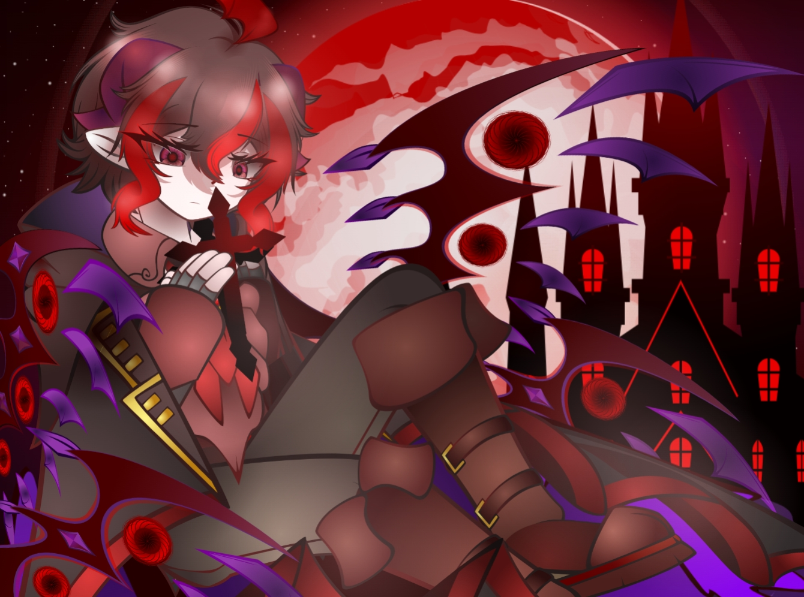
Scratchのベクターエディターのみを使用して制作した
オリジナルキャラクター作品です。
この作品では、
ベクターエディターでどこまで陰影や立体感を表現できるかに挑戦しました。
黒・赤・紫を中心とした色を使い、
ヴァンパイアをモチーフとしたキャラクターの
妖しさや危険な雰囲気を表現しています。
髪や服には細かな陰影を重ね、
平面的になりすぎないように調整しました。
また、キャラクターだけで画面を完結させるのではなく、
背景にも月や城、翼を思わせる装飾を配置し、
一枚のイラストとして世界観を感じられる構成にしています。
龍
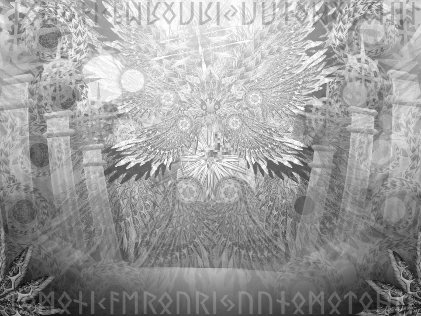
「自分の思う神」をテーマに制作したオリジナル作品です。
一般的な生き物としての龍ではなく、
人間から見て理解しきれない存在として表現するため、
モノクロを中心に画面全体を構成しました。
龍の周囲には装飾や模様を重ね、
一つのキャラクターというよりも
「何かを象徴する存在」として見えることを意識しています。
左右対称を基本とした構図の中に
一部異なる要素を入れることで、
完全に整っただけではない印象も持たせました。
龍そのものだけではなく、
背景の柱や文字、装飾まで含めて一つの作品として制作しています。
龍・世界観イラスト
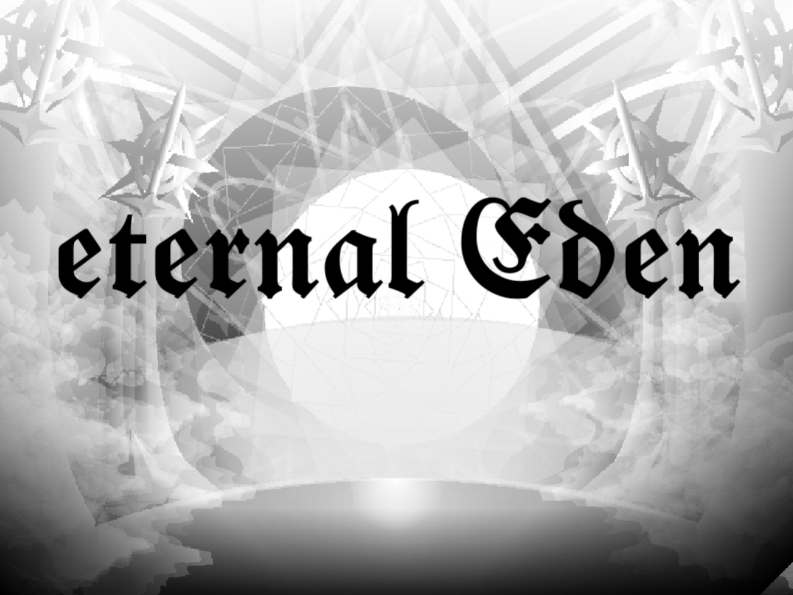
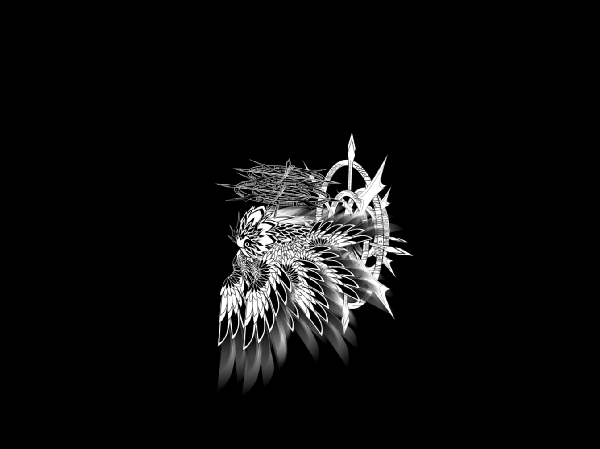
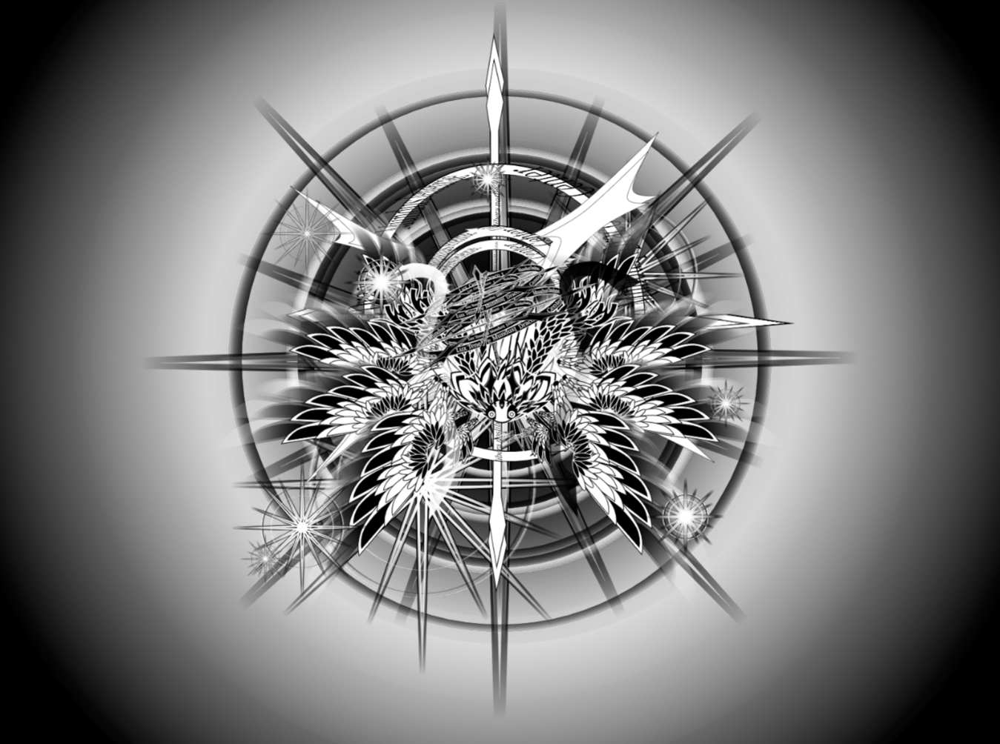
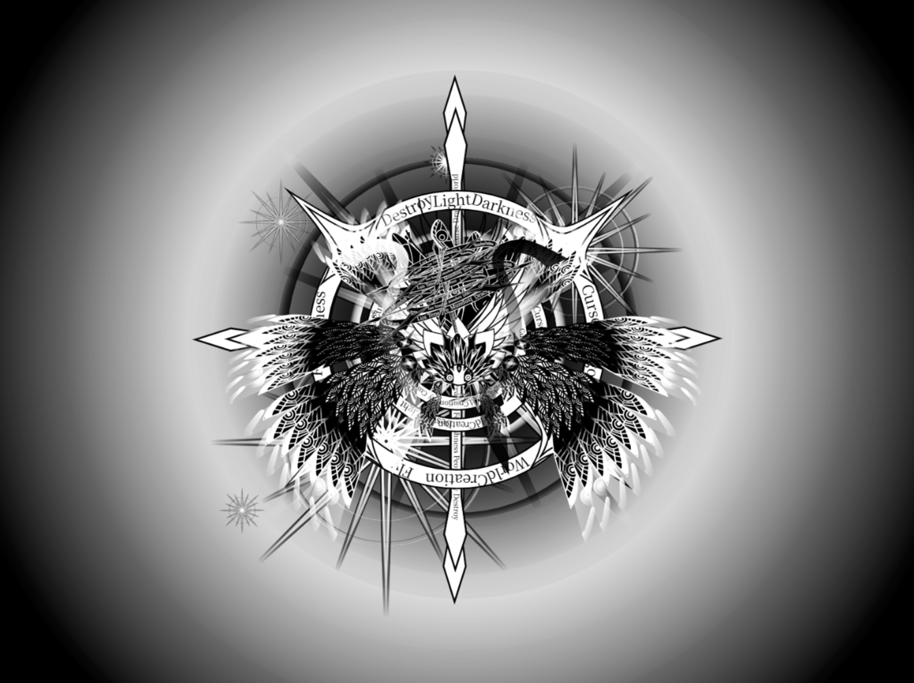
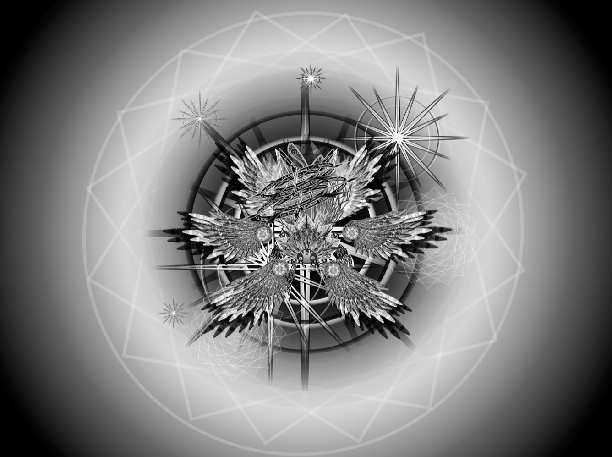
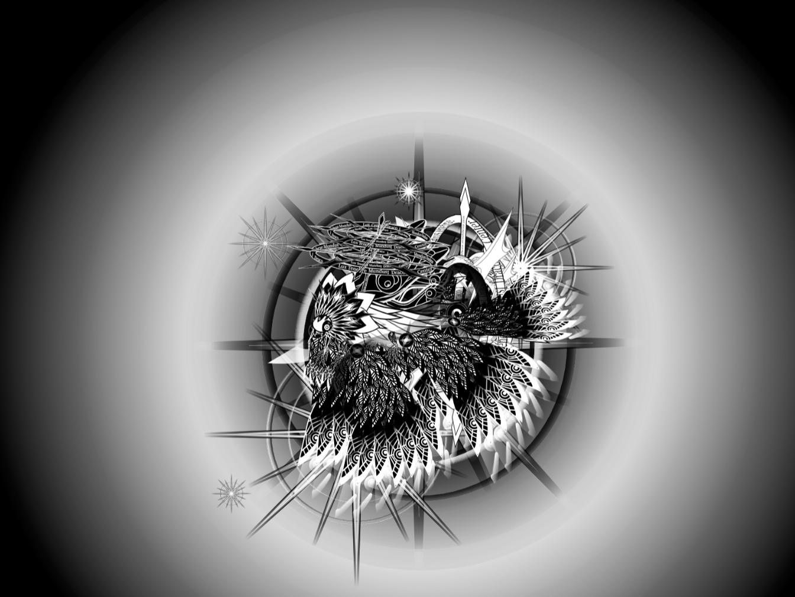
「龍」という一つのモチーフを、
これまで何度も描き直しながら制作してきた作品群です。
同じ「龍」を描いていても、
その時々で構図や装飾、表現方法を変え、
自分の中にある「龍」のイメージを少しずつ形にしてきました。
一枚の作品を完成させて終わりにするのではなく、
新しく描き直すたびに以前の作品とは違う表現を試し、
龍というモチーフそのものを掘り下げています。
翼や円形の図形、文字、光など、
その時々でさまざまな要素を組み合わせながら、
龍そのものだけでなく、
その周囲にある世界や雰囲気まで含めて表現しています。
何度も描き直してきたからこそ、
それぞれの作品にはその時期の自分なりの
「龍」の捉え方が表れており、
一連の作品を通して表現の変化を見ることができます。
ドラゴン
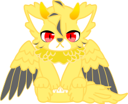
子供のドラゴンをモチーフに制作したオリジナルキャラクターです。
ドラゴンとして見たときに特徴が伝わることを重視し、
身体や翼などの各パーツを組み合わせながら
全体のシルエットを整えました。
細かな部分を描き込むだけではなく、
少し離れて見たときにも
キャラクター全体の形が分かることを意識しています。
Scratchのベクターエディターで
図形や曲線を組み合わせ、
パーツごとに調整しながら一つのキャラクターとして完成させました。
咲き誇る海月蝶
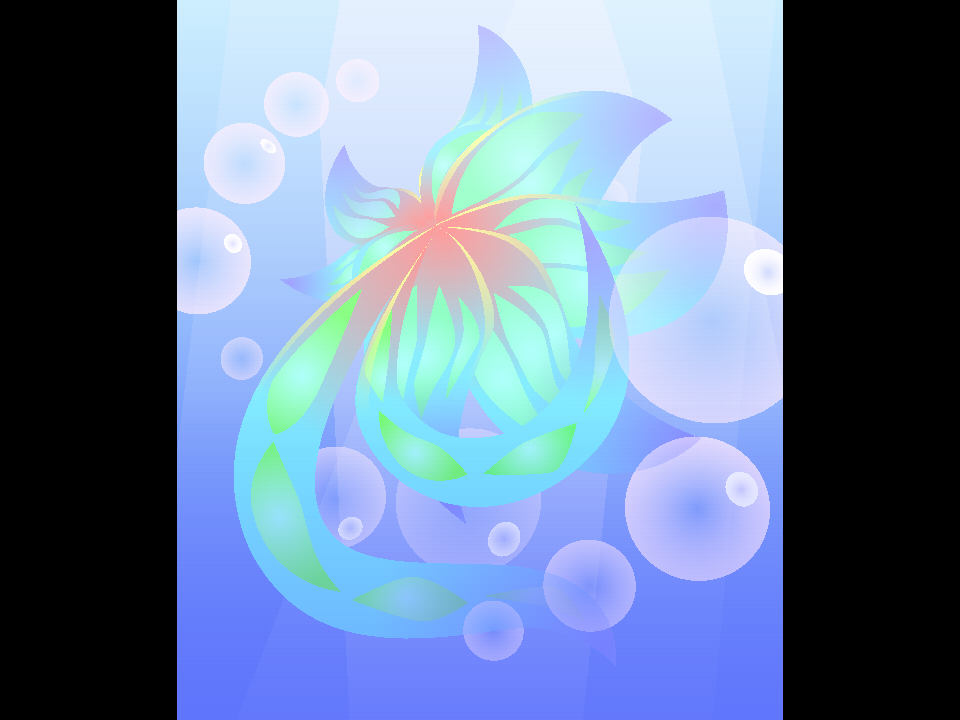
「咲き誇る海月蝶」をイメージして制作した
オリジナルキャラクターイラストです。
海月と蝶という二つのモチーフを組み合わせ、
そこへ「花が咲く」というイメージを加えてデザインしました。
水中を思わせる色の中に
緑・紫・ピンクなどの色を重ね、
透明感のあるパーツが重なって見えるようにしています。
中央から外側へ広がる形を意識し、
羽や触手を思わせるパーツを配置することで、
名前にある「咲き誇る」という印象につなげました。
生き物としての形だけでなく、
花のような美しさも感じられるキャラクターを目指した作品です。
コンセントのアイコン
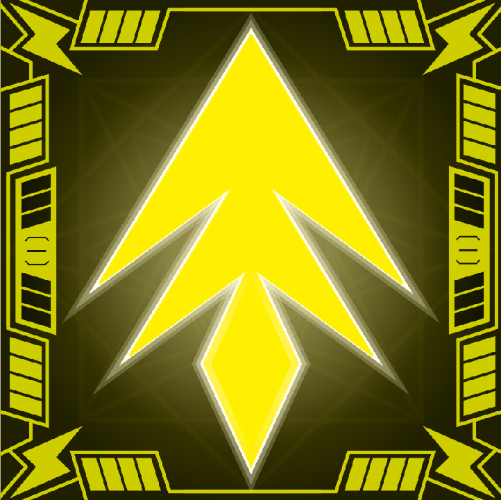
「コンセント」をモチーフに制作したアイコンです。
自分を表すシンボルとして使用することを想定し、
中央のモチーフを大きく配置して、
小さく表示した場合でも形が分かりやすい構成にしました。
周囲にも似たようなモチーフを取り入れ、
中央のシンボルを中心としたまとまりを作っています。
黄色を中心とした色と発光するような表現を組み合わせ、
アイコンとして目に入りやすいデザインに仕上げました。
ebihurai
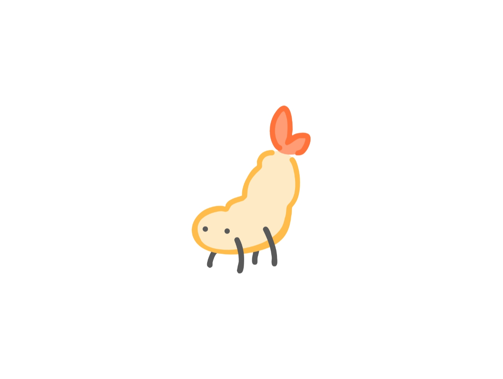
エビフライをかわいくデザインした
オリジナルキャラクターです。
食べ物としてのエビフライらしさを残しながら、
丸みのある形と小さな顔を組み合わせ、
キャラクターとして親しみやすくなるようにデザインしました。
要素を増やしすぎず、
シンプルな形でキャラクターとして成立させることを意識しています。
「食べ物をキャラクターにしたらどうなるか」
という発想から生まれた作品です。
キャラクター作品
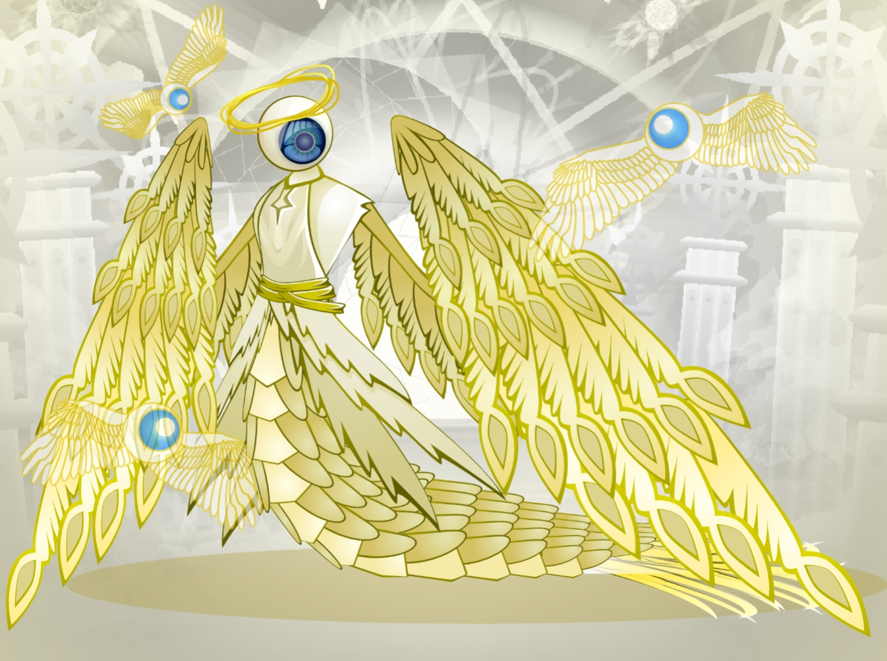
天使をモチーフに制作したキャラクターイラストです。
大きな翼や光輪、羽の装飾を組み合わせ、
神聖さや幻想的な印象を持つキャラクターとしてまとめました。
白と黄色を中心にした明るい配色の中へ
青い瞳を配置し、
キャラクターの顔へ視線が集まるようにしています。
大きなシルエットと細かな装飾を両方取り入れ、
全体の形と細部の描き込みを同時に楽しめる作品を目指しました。
コンセントズ
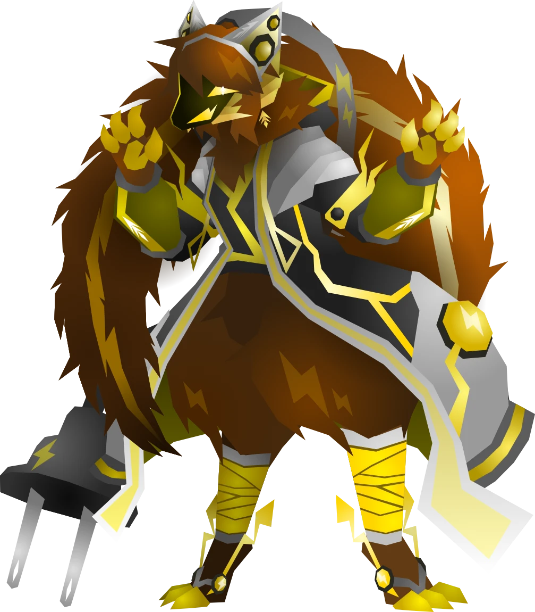
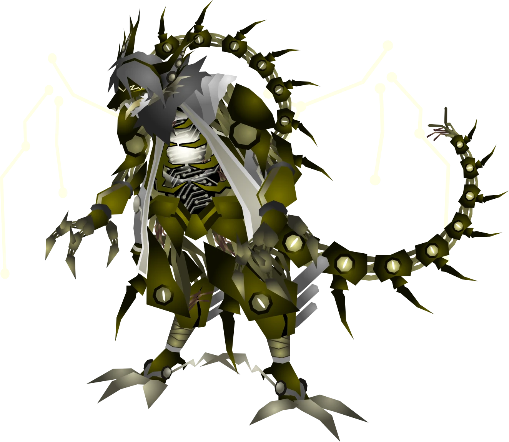
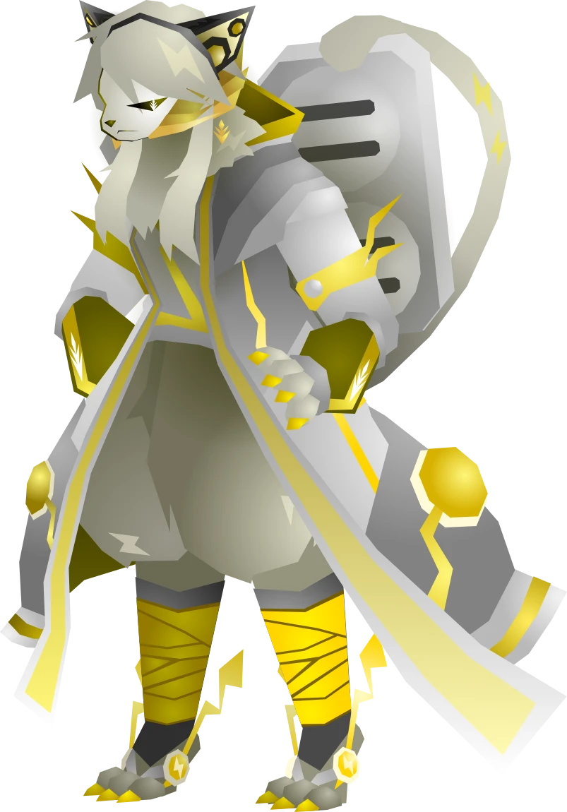
自分のアイコン「コンセント」をモチーフにした、オリジナルキャラクターのシリーズです。
希望・空虚・絶望の三体で、体の色や毛並み、
身につけている衣装のシルエットを変えながら、
黄色い稲妻の模様やプラグといった共通の要素でまとまりを出しています。
立体的に見えるように、面ごとに明暗のグラデーションをつけて
金属や毛皮の質感を表現しました。
世界観・コンセプトアート
MOON CORE
MOON COREの世界観を象徴するロゴデザインです。
左右に広がる羽根は、
未来への発展や可能性を表現しています。
青を基調とすることで、
科学技術やAIが発展した未来という
MOON COREの世界観に合わせました。
中央には円形のモチーフを配置し、
「MOON」の由来である月を表現しています。
シンプルな形状の中に世界観を象徴する要素をまとめ、
ロゴだけを見てもMOON COREの世界を連想できることを意識しました。
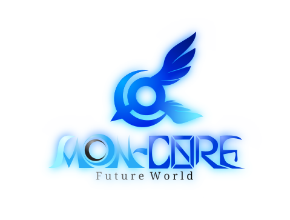
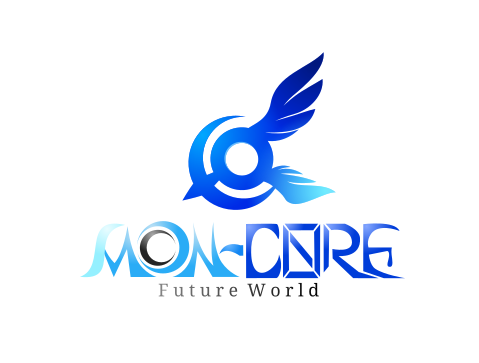
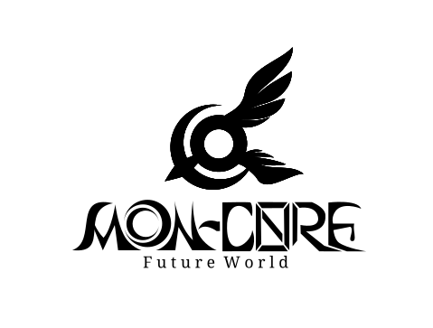
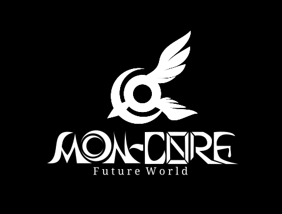
MOON COREは、 科学技術やAI、生体工学が発展した未来を舞台とする オリジナルSF世界観作品です。
コンセプト
MOON COREは、
科学技術やAI、生体工学が極限まで発展した未来を舞台としたSF世界です。
未来技術そのものだけではなく、
進化病や変異体、アンドロイド、国家ごとの思想などを通して、
「人間とは何か」「意味とは何か」といった
答えのない問いを描くことをテーマとしています。
主なテーマ
- 意味とは何か
- 人間らしさとは何か
- 自由と管理
- 罪と償い
- 不完全であることの価値
イラスト
MOON COREの世界を構成するために、
ロゴやイラスト、資料などを制作しています。
個々のイラストだけではなく、
複数のグラフィックを組み合わせることで、
一つの世界として感じられることを意識しています。
草原のおともだち
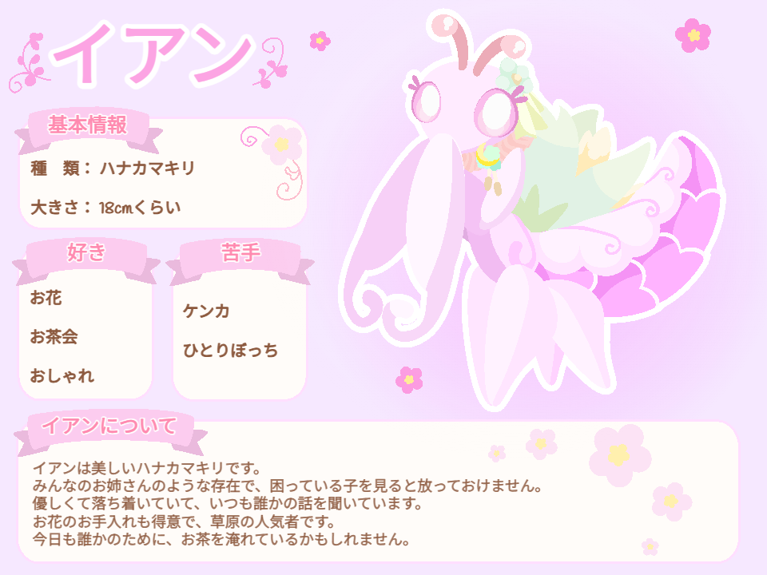
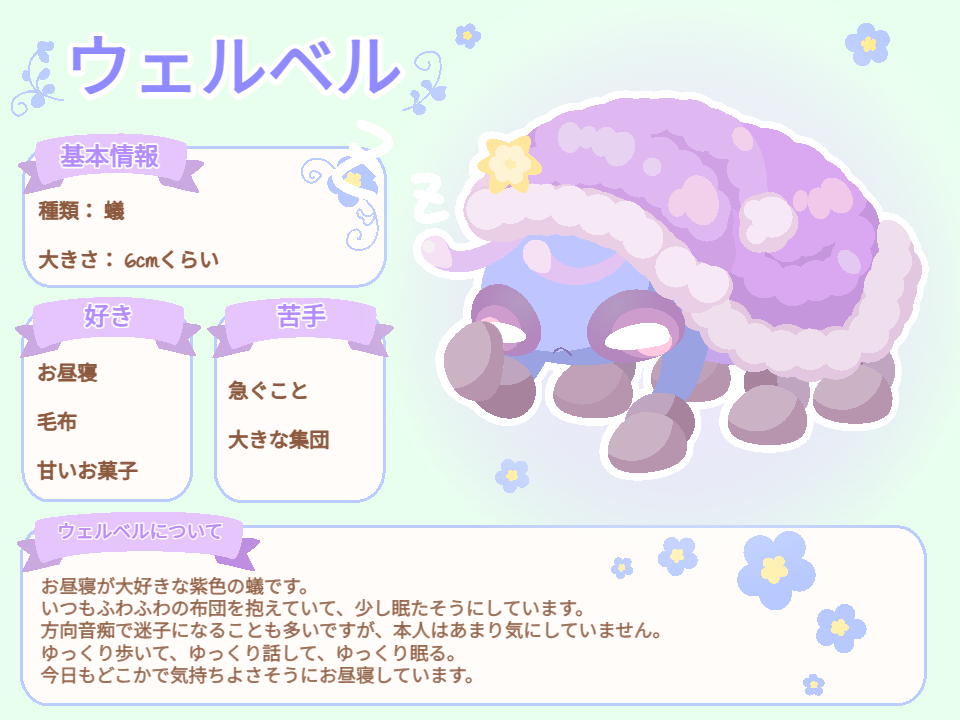
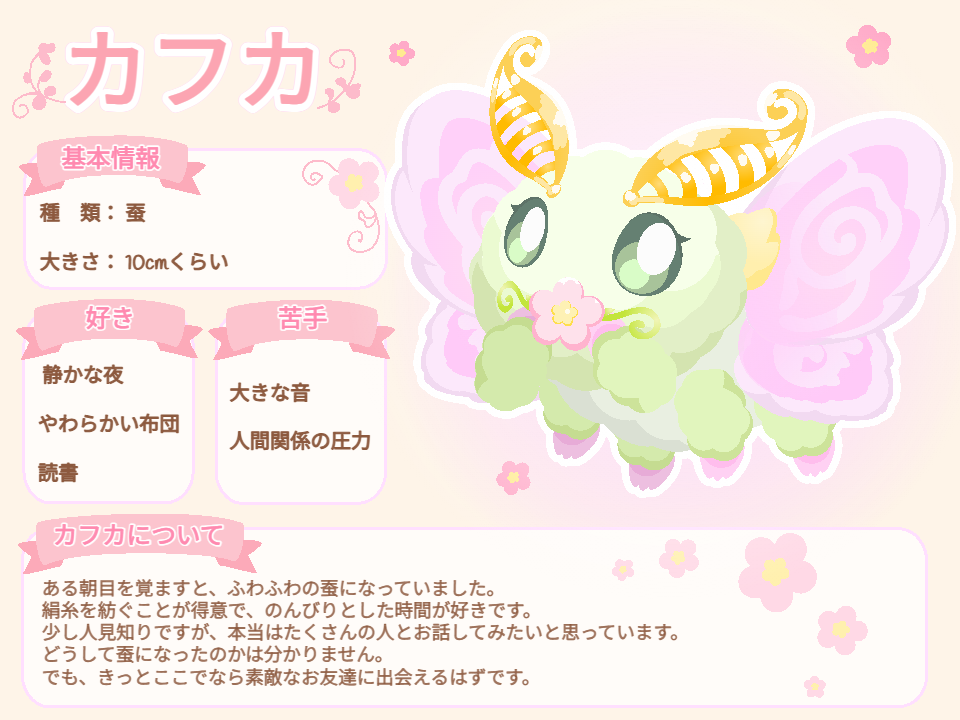
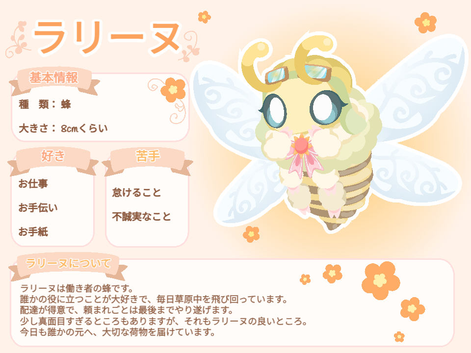
友人の依頼で制作したキャラクター作品です。
背景の描き方などを友人と相談しながら、
「草原のおともだち」をテーマに
4人のキャラクターを一つのシリーズとしてまとめました。
イアン、ウェルベル、カフカ、ラリーヌの4人を
一つのシリーズとしてまとめながら、
それぞれの色やデザインには違いを持たせています。
複数のキャラクターを同じ画面で紹介することで、
一人ずつを見るだけではなく、
「4人で一つの作品」として楽しめる見せ方を意識しました。
共通した要素を残しながらそれぞれの個性を分けることで、
シリーズとしての統一感と、
キャラクターごとの違いを両立させています。
背景・コンセプトイラスト
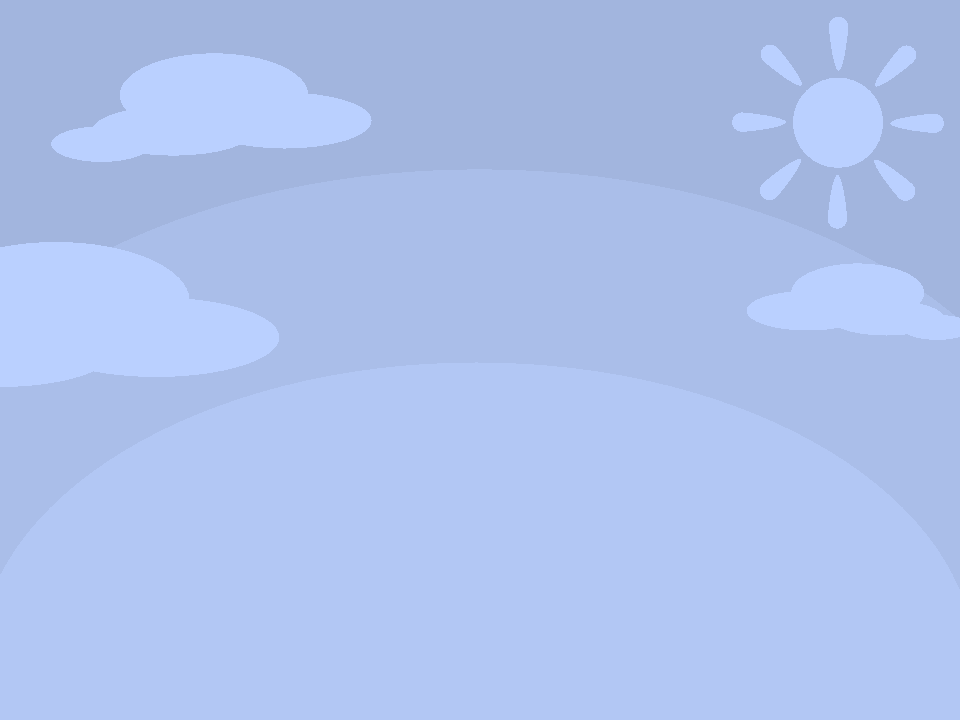
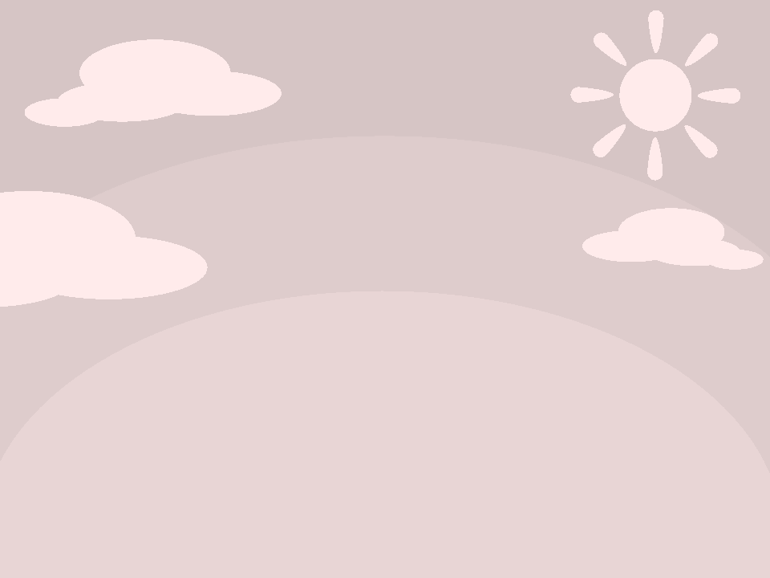
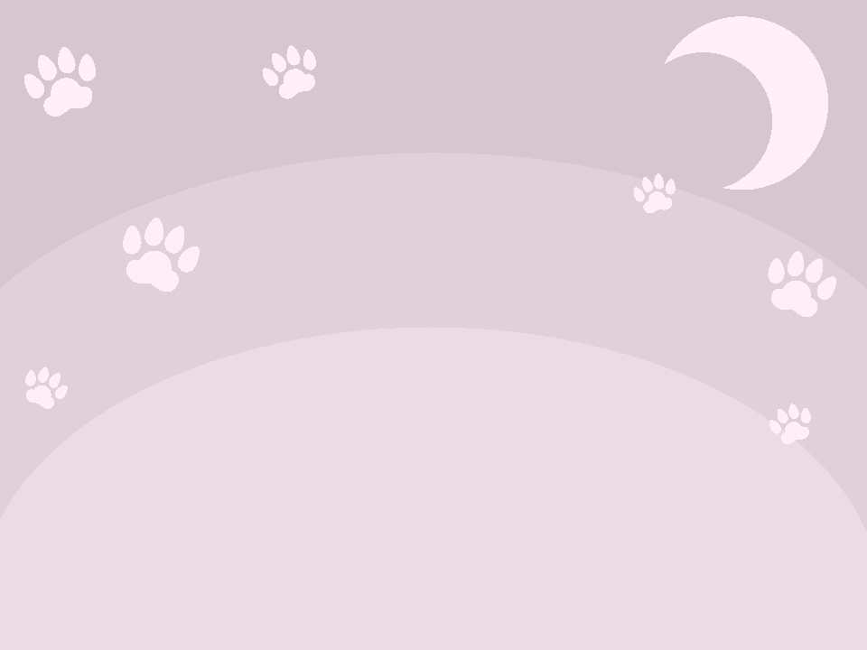
ゲームや創作で使用することを想定して制作した
背景・コンセプトイラストです。
月、星、雲、太陽、足跡などのモチーフを使い、
大きな形と余白を残した構成にしています。
背景はキャラクターや文字が上に重なることも多いため、
細かな情報を詰め込みすぎず、
画面全体の雰囲気を作れることを意識しました。
一つの構成をもとに複数のパターンを作ることで、
色やモチーフを変えながら
同じ世界観の中で使い分けられるようにしています。
世界観素材
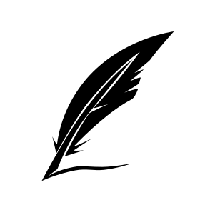
創作の世界観を構成するために制作した
グラフィック素材です。
羽ペンのような単体のモチーフを制作し、
キャラクターや背景とは別に、
Webサイトや作品内の装飾として使用できるようにしています。
素材単体でも成立しながら、
他のグラフィックと組み合わせたときにも
世界観を邪魔しないことを意識して制作しました。
階級シート
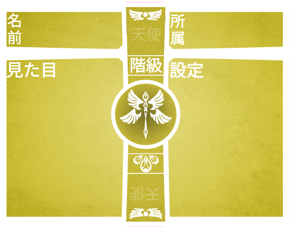
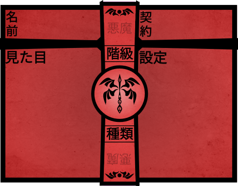
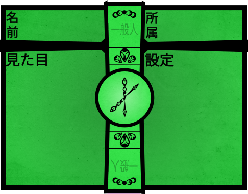
世界観に登場する種族ごとの階級シートです。
天使は黄色、悪魔は赤、人間は緑と、種族ごとに色を分け、
名前・所属・見た目・階級・設定を書き込める
共通のレイアウトにしました。
色とレイアウトの共通部分で一つのシリーズとしてまとめ、
中央の紋章で種族の違いが伝わるようにしています。
竜の種族
世界観に登場する竜の種族を、12種類のシルエットでデザインしました。
翼の形や尻尾、角、身体の細さなどを変えて、
黒いシルエットだけでも種族の違いが分かるようにしています。
コウモリのような翼、鳥のような羽、骨だけの姿、
翼のない蛇のような姿など、
同じ「竜」でも印象が変わるように描き分けました。
翼素材
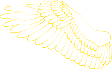
キャラクターの背中に重ねて使うための翼の素材です。
天使の翼は一枚ずつ羽を重ねて柔らかく、
悪魔の翼は骨組みを黒い線で描いて膜を赤いグラデーションにし、
種族ごとの印象の違いが出るようにしました。
背景パターン
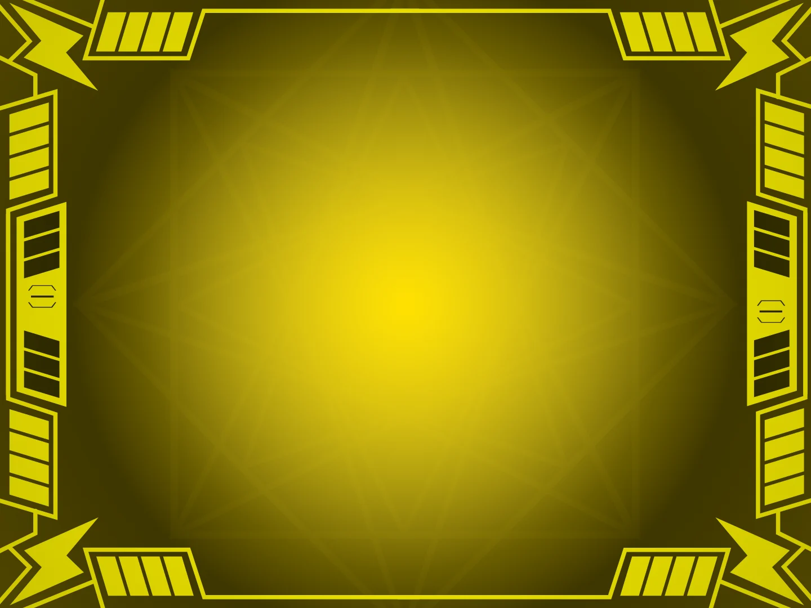
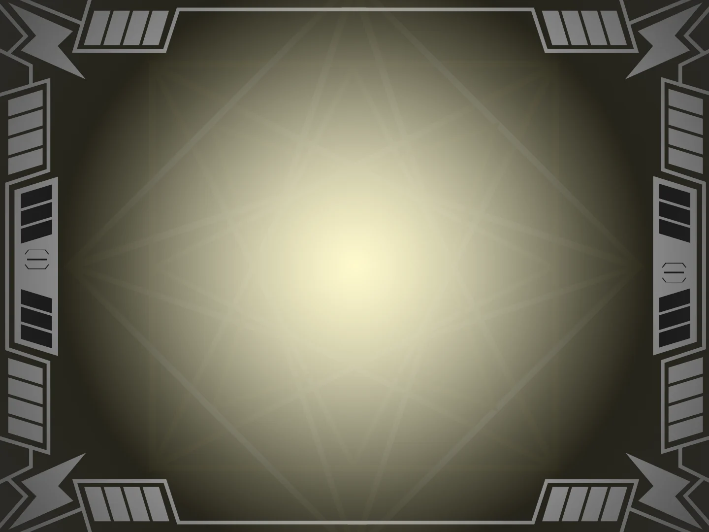
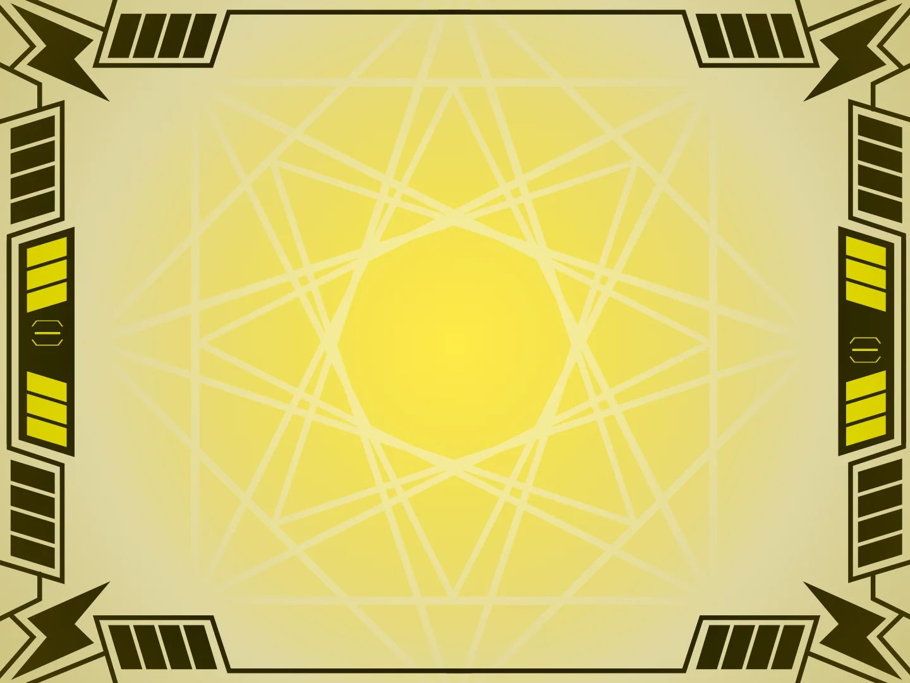
コンセントズのキャラクターと合わせて使う、背景パターンです。
左右と四隅に機械的なパーツを並べ、
中央には放射状の光と幾何学模様を重ねました。
中央を広く空けているので、キャラクターや文字を置いて使えます。
同じ構図のまま、黄色・灰色・淡い黄色と配色を変えて、
キャラクターごとの雰囲気に合わせられるようにしています。
キャラクターシート
キャラクターシート
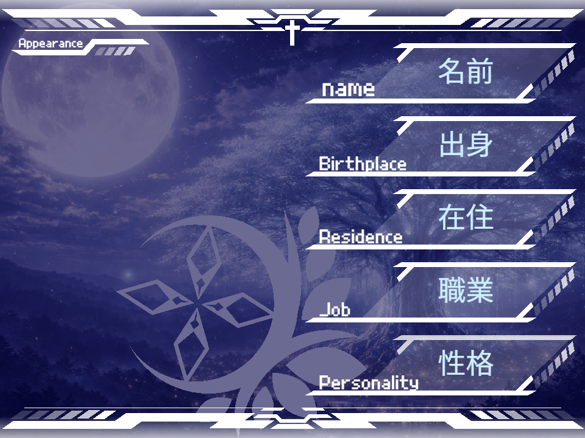
参加型企画で使用するキャラクターシートです。
参加者がそれぞれ自分のキャラクターを作成・紹介できるよう、
キャラクターのイラストと名前・出身・在住・職業・性格などの
基本設定を一枚にまとめられる形式にしました。
共通のレイアウトを使用しながら、
黄色・緑・青・赤など複数の配色や背景デザインを用意しています。
参加者が自分のキャラクターに合ったデザインを選ぶことで、
同じ企画のキャラクターシートでありながら、
それぞれのキャラクターの個性が引き立つようにしています。
また、イラストと設定情報の両方を見やすくするため、
情報量に合わせて配置や余白を調整しています。
共通する部分を揃えることで企画全体の統一感を保ちつつ、
色や背景、装飾を変えることで
参加者ごとのキャラクターが個性的に見えることを意識しました。